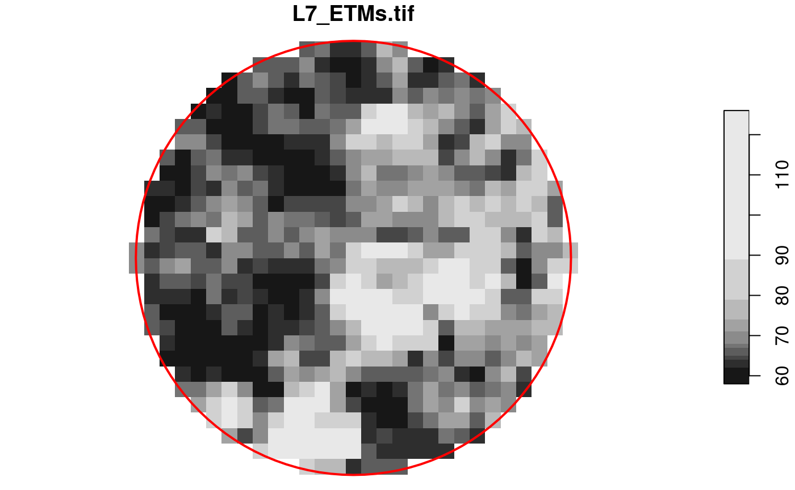

Package stars provides infrastructure for data cubes, array data with labeled dimensions, with emphasis on arrays where some of the dimensions relate to time and/or space.
Spatial data cubes are arrays with one or more spatial dimensions. Raster data cubes have at least two spatial dimensions that form the raster tesselation. Vector data cubes have at least one spatial dimension that may for instance reflect a polygon tesselation, or a set of point locations. Conversions between the two (rasterization, polygonization) are provided. Vector data are represented by simple feature geometries (packages sf). Tidyverse methods are provided.
The stars package is loaded by
library(stars)
## Loading required package: abind
## Loading required package: sf
## Linking to GEOS 3.5.0, GDAL 2.2.2, PROJ 4.8.0Spatiotemporal arrays are stored in objects of class stars; methods for class stars currently available are
methods(class = "stars")
## [1] [ [<- $<-
## [4] adrop aggregate aperm
## [7] as.data.frame c coerce
## [10] cut dim dimnames
## [13] dimnames<- image initialize
## [16] is.na Math merge
## [19] Ops plot predict
## [22] print show slotsFromS3
## [25] split st_apply st_area
## [28] st_as_sf st_as_sfc st_as_stars
## [31] st_bbox st_coordinates st_crop
## [34] st_crs st_crs<- st_dimensions
## [37] st_geometry st_intersects st_normalize
## [40] st_redimension st_transform_proj st_transform
## [43] write_stars
## see '?methods' for accessing help and source code(tidyverse methods are only visible after loading package tidyverse).
Reading a satellite image
We can read a satellite image through GDAL, e.g. from a GeoTIFF file in the package:
We see that the image is geographically referenced (has coordinate values along axes), and that the object returned (x) has three dimensions called x, y and band, and has one attribute.
x
## stars object with 3 dimensions and 1 attribute
## attribute(s):
## L7_ETMs.tif
## Min. : 1.00
## 1st Qu.: 54.00
## Median : 69.00
## Mean : 68.91
## 3rd Qu.: 86.00
## Max. :255.00
## dimension(s):
## from to offset delta refsys point values
## x 1 349 288776 28.5 +proj=utm +zone=25 +south... FALSE NULL [x]
## y 1 352 9120761 -28.5 +proj=utm +zone=25 +south... FALSE NULL [y]
## band 1 6 NA NA NA NA NULLEach dimension has a name; the meaning of the fields of a single dimension are:
| field | meaning |
|---|---|
| from | the origin index (1) |
| to | the final index (dim(x)[i]) |
| offset | the start value for this dimension (pixel boundary), if regular |
| delta | the step (pixel, cell) size for this dimension, if regular |
| refsys | the reference system, or proj4string |
| point | logical; whether cells refer to points, or intervals |
| values | the sequence of values for this dimension (e.g., geometries), if irregular |
This means that for an index i (starting at \(i=1\)) along a certain dimension, the corresponding dimension value (coordinate, time) is \(\mbox{offset} + (i-1) \times \mbox{delta}\). This value then refers to the start (edge) of the cell or interval; in order to get the interval middle or cell centre, one needs to add half an offset.
Dimension band is a simple sequence from 1 to 6. Since bands refer to colors, one could put their wavelength values in the values field.
For this particular dataset (and most other raster datasets), we see that offset for dimension y is negative: this means that consecutive array values have decreasing \(y\) values: cell indexes increase from top to bottom, in the direction opposite to the \(y\) axis.
read_stars reads all bands from a raster dataset, or optionally a subset of raster datasets, into a single stars array structure. While doing so, raster values (often UINT8 or UINT16) are converted to double (numeric) values, and scaled back to their original values if needed if the file encodes the scaling parameters.
The data structure stars is a generalisation of the tbl_cube found in dplyr; we can convert to that by
library(dplyr)
##
## Attaching package: 'dplyr'
## The following objects are masked from 'package:stats':
##
## filter, lag
## The following objects are masked from 'package:base':
##
## intersect, setdiff, setequal, union
as.tbl_cube(x)
## Source: local array [737,088 x 3]
## D: x [dbl, 349]
## D: y [dbl, 352]
## D: band [int, 6]
## M: L7_ETMs.tif [dbl[,352,6]]but this will cause a loss of certain properties (cell size, reference system, vector geometries)
Switching attributes to dimensions and back
(x.spl = split(x, "band"))
## stars object with 2 dimensions and 6 attributes
## attribute(s):
## X1 X2 X3 X4
## Min. : 47.00 Min. : 32.00 Min. : 21.00 Min. : 9.00
## 1st Qu.: 67.00 1st Qu.: 55.00 1st Qu.: 49.00 1st Qu.: 52.00
## Median : 78.00 Median : 66.00 Median : 63.00 Median : 63.00
## Mean : 79.15 Mean : 67.57 Mean : 64.36 Mean : 59.24
## 3rd Qu.: 89.00 3rd Qu.: 79.00 3rd Qu.: 77.00 3rd Qu.: 75.00
## Max. :255.00 Max. :255.00 Max. :255.00 Max. :255.00
## X5 X6
## Min. : 1.00 Min. : 1.00
## 1st Qu.: 63.00 1st Qu.: 32.00
## Median : 89.00 Median : 60.00
## Mean : 83.18 Mean : 59.98
## 3rd Qu.:112.00 3rd Qu.: 88.00
## Max. :255.00 Max. :255.00
## dimension(s):
## from to offset delta refsys point values
## x 1 349 288776 28.5 +proj=utm +zone=25 +south... FALSE NULL [x]
## y 1 352 9120761 -28.5 +proj=utm +zone=25 +south... FALSE NULL [y]
merge(x.spl)
## stars object with 3 dimensions and 1 attribute
## attribute(s):
## X
## Min. : 1.00
## 1st Qu.: 54.00
## Median : 69.00
## Mean : 68.91
## 3rd Qu.: 86.00
## Max. :255.00
## dimension(s):
## from to offset delta refsys point values
## x 1 349 288776 28.5 +proj=utm +zone=25 +south... FALSE NULL [x]
## y 1 352 9120761 -28.5 +proj=utm +zone=25 +south... FALSE NULL [y]
## X1 1 6 NA NA NA NA X1,...,X6We see that the newly created dimension lost its name, and the single attribute got a default name. We can set attribute names with setNames, and dimension names and values with st_set_dimensions:
merge(x.spl) %>%
setNames(names(x)) %>%
st_set_dimensions(3, values = paste0("band", 1:6)) %>%
st_set_dimensions(names = c("x", "y", "band"))
## stars object with 3 dimensions and 1 attribute
## attribute(s):
## L7_ETMs.tif
## Min. : 1.00
## 1st Qu.: 54.00
## Median : 69.00
## Mean : 68.91
## 3rd Qu.: 86.00
## Max. :255.00
## dimension(s):
## from to offset delta refsys point
## x 1 349 288776 28.5 +proj=utm +zone=25 +south... FALSE
## y 1 352 9120761 -28.5 +proj=utm +zone=25 +south... FALSE
## band 1 6 NA NA NA NA
## values
## x NULL [x]
## y NULL [y]
## band band1,...,band6Subsetting
Besides the tidyverse subsetting and selection operators explained in this vignette, we can also use [ and [[.
Since stars objects are a list of arrays with a metadata table describing dimensions, list extraction (and assignment) works as expected:
class(x[[1]])
## [1] "array"
dim(x[[1]])
## x y band
## 349 352 6
x$two = 2 * x[[1]]
x
## stars object with 3 dimensions and 2 attributes
## attribute(s):
## L7_ETMs.tif two
## Min. : 1.00 Min. : 2.0
## 1st Qu.: 54.00 1st Qu.:108.0
## Median : 69.00 Median :138.0
## Mean : 68.91 Mean :137.8
## 3rd Qu.: 86.00 3rd Qu.:172.0
## Max. :255.00 Max. :510.0
## dimension(s):
## from to offset delta refsys point values
## x 1 349 288776 28.5 +proj=utm +zone=25 +south... FALSE NULL [x]
## y 1 352 9120761 -28.5 +proj=utm +zone=25 +south... FALSE NULL [y]
## band 1 6 NA NA NA NA NULLAt this level, we can work with array objects directly.
The stars subset operator [ works a bit different: its
- first argument selects attributes
- second argument selects the first dimension
- third argument selects the second dimension, etc
Thus,
x["two", 1:10, , 2:4]
## stars object with 3 dimensions and 1 attribute
## attribute(s):
## two
## Min. : 36.0
## 1st Qu.:100.0
## Median :116.0
## Mean :119.7
## 3rd Qu.:136.0
## Max. :470.0
## dimension(s):
## from to offset delta refsys point values
## x 1 10 288776 28.5 +proj=utm +zone=25 +south... FALSE NULL [x]
## y 1 352 9120761 -28.5 +proj=utm +zone=25 +south... FALSE NULL [y]
## band 2 4 NA NA NA NA NULLselects the second attribute, the first 10 columns (x-coordinate), all rows, and bands 2-4.
Alternatively, when [ is given a single argument of class sf, sfc or bbox, [ will work as a crop operator:
circle = st_sfc(st_buffer(st_point(c(293749.5, 9115745)), 400), crs = st_crs(x))
plot(x[circle][, , , 1], reset = FALSE)
plot(circle, col = NA, border = 'red', add = TRUE, lwd = 2)
Overviews
We can read rasters at a lower resolution when they contain so-called overviews. For this GeoTIFF file, they were created with the gdaladdo utility, in particular
gdaladdo -r average L7_ETMs.tif 2 4 8 16which adds coarse resolution versions by using the average resampling method to compute values based on blocks of pixels. These can be read by
Reading a raster time series: NetCDF
Another example is when we read raster time series model outputs in a NetCDF file, e.g. by
system.file("nc/bcsd_obs_1999.nc", package = "stars") %>%
read_stars("data/full_data_daily_2013.nc") -> w
## pr, tas,We see that
w
## stars object with 3 dimensions and 2 attributes
## attribute(s):
## pr [mm/m] tas [C]
## Min. : 0.59 Min. :-0.421
## 1st Qu.: 56.14 1st Qu.: 8.899
## Median : 81.88 Median :15.658
## Mean :101.26 Mean :15.489
## 3rd Qu.:121.07 3rd Qu.:21.780
## Max. :848.55 Max. :29.386
## NA's :7116 NA's :7116
## dimension(s):
## from to offset delta refsys point values
## x 1 81 -85 0.125 NA NA NULL [x]
## y 1 33 37.125 -0.125 NA NA NULL [y]
## time 1 12 NA NA POSIXct NA 1999-01-31,...,1999-12-31For this dataset we can see that
- variables have units associated (and a wrong unit,
Cis assigned to temperature) - time is now a dimension, with proper units and time steps
Alternatively, this dataset can be read using read_ncdf, as in
system.file("nc/bcsd_obs_1999.nc", package = "stars") %>%
read_ncdf()
## stars object with 3 dimensions and 2 attributes
## attribute(s):
## pr [mm/m] tas [C]
## Min. : 0.59 Min. :-0.421
## 1st Qu.: 56.14 1st Qu.: 8.899
## Median : 81.88 Median :15.658
## Mean :101.26 Mean :15.489
## 3rd Qu.:121.07 3rd Qu.:21.780
## Max. :848.55 Max. :29.386
## NA's :7116 NA's :7116
## dimension(s):
## from to offset delta refsys point values
## longitude 1 81 -85 0.125 NA NA NULL [x]
## latitude 1 33 33 0.125 NA NA NULL [y]
## time 1 12 NA NA POSIXct NA 1999-01-31,...,1999-12-31which doesn’t convert time values in a proper R time format.
Reading datasets from multiple files
Model data are often spread across many files. An example of a 0.25 degree grid, global daily sea surface temperature product is found here; a subset of the 1981 data was downloaded from here.
We read the data by giving read_stars a vector with character names:
x = c(
"avhrr-only-v2.19810901.nc",
"avhrr-only-v2.19810902.nc",
"avhrr-only-v2.19810903.nc",
"avhrr-only-v2.19810904.nc",
"avhrr-only-v2.19810905.nc",
"avhrr-only-v2.19810906.nc",
"avhrr-only-v2.19810907.nc",
"avhrr-only-v2.19810908.nc",
"avhrr-only-v2.19810909.nc"
)
# see the second vignette:
# install.packages("starsdata", repos = "http://pebesma.staff.ifgi.de", type = "source")
file_list = system.file(paste0("netcdf/", x), package = "starsdata")
(y = read_stars(file_list, quiet = TRUE))
## stars object with 4 dimensions and 4 attributes
## attribute(s), summary of first 1e+05 cells:
## sst [°*C] anom [°*C] err [°*C] ice [percent]
## Min. :-1.80 Min. :-4.69 Min. :0.110 Min. :0.010
## 1st Qu.:-1.19 1st Qu.:-0.06 1st Qu.:0.300 1st Qu.:0.730
## Median :-1.05 Median : 0.52 Median :0.300 Median :0.830
## Mean :-0.32 Mean : 0.23 Mean :0.295 Mean :0.766
## 3rd Qu.:-0.20 3rd Qu.: 0.71 3rd Qu.:0.300 3rd Qu.:0.870
## Max. : 9.36 Max. : 3.70 Max. :0.480 Max. :1.000
## NA's :13360 NA's :13360 NA's :13360 NA's :27377
## dimension(s):
## from to offset delta refsys point values
## x 1 1440 0 0.25 NA NA NULL [x]
## y 1 720 90 -0.25 NA NA NULL [y]
## zlev 1 1 0 [m] NA NA NA NULL
## time 1 9 1981-09-01 UTC 1 days POSIXct NA NULLNext, we select sea surface temperature (sst), and drop the singular zlev (depth) dimension using adrop:
We can now graph the sea surface temperature (SST) using ggplot, which needs data in a long table form, and without units:
library(ggplot2)
library(viridis)
## Loading required package: viridisLite
library(ggthemes)
ggplot() +
geom_stars(data = z[1], alpha = 0.8, downsample = c(10, 10, 1)) +
facet_wrap("time") +
scale_fill_viridis() +
coord_equal() +
theme_map() +
theme(legend.position = "bottom") +
theme(legend.key.width = unit(2, "cm"))
Writing stars objects to disk
We can write a stars object to disk by using write_stars; this used the GDAL write engine. Writing NetCDF files without going through the GDAL interface is currently not supported. write_stars currently writes only a single attribute:
See the explanation of merge above to see how multiple attributes can be merged (folded) into a dimension.
Cropping a raster’s extent
Using a curvilinear grid, taken from the example of read_ncdf:
prec_file = system.file("nc/test_stageiv_xyt.nc", package = "stars")
prec = read_ncdf(prec_file, curvilinear = c("lon", "lat"))
## Warning: Could not parse expression: '`kg` `m`^-2'. Returning as a single
## symbolic unit()
## Warning: ignoring unrecognized unit: kg m^-2
## Warning in read_ncdf(prec_file, curvilinear = c("lon", "lat")): bounds for
## time seem to be reversed; reverting them
##plot(prec) ## gives error about unique breaks
## remove NAs, zeros, and give a large number
## of breaks (used for validating in detail)
qu_0_omit = function(x, ..., n = 22) {
x = na.omit(x)
c(0, quantile(x[x > 0], seq(0, 1, length.out = n)))
}
library(dplyr) # loads slice generic
prec_slice = slice(prec, index = 17, along = "time")
plot(prec_slice, border = NA, breaks = qu_0_omit(prec_slice[[1]]), reset = FALSE)
nc = sf::read_sf(system.file("gpkg/nc.gpkg", package = "sf"), "nc.gpkg")
plot(st_geometry(nc), add = TRUE, reset = FALSE, col = NA, border = 'red')
We can now crop the grid to those cells falling in
nc = st_transform(nc, st_crs(prec_slice)) # datum transformation
plot(prec_slice[nc], border = NA, breaks = qu_0_omit(prec_slice[[1]]), reset = FALSE)
## although coordinates are longitude/latitude, st_intersects assumes that they are planar
plot(st_geometry(nc), add = TRUE, reset = FALSE, col = NA, border = 'red')
The selection prec_slice[nc] essentially calls st_crop(prec_slice, nc) to get a cropped selection. What happened here is that all cells not intersecting with North Carolina (sea) are set to NA values. For regular grids, the extent of the resulting stars object is also be reduced (cropped) by default; this can be controlled with the crop parameter to st_crop and [.stars.
Vector data cube example
Like tbl_cube, stars arrays have no limits to the number of dimensions they handle. An example is the origin-destination (OD) matrix, by time and travel mode.
OD: space x space x travel mode x time x time
We create a 5-dimensional matrix of traffic between regions, by day, by time of day, and by travel mode. Having day and time of day each as dimension is an advantage when we want to compute patterns over the day, for a certain period.
nc = st_read(system.file("gpkg/nc.gpkg", package="sf"))
## Reading layer `nc.gpkg' from data source `/usr/local/lib/R/site-library/sf/gpkg/nc.gpkg' using driver `GPKG'
## Simple feature collection with 100 features and 14 fields
## geometry type: MULTIPOLYGON
## dimension: XY
## bbox: xmin: -84.32385 ymin: 33.88199 xmax: -75.45698 ymax: 36.58965
## epsg (SRID): 4267
## proj4string: +proj=longlat +datum=NAD27 +no_defs
to = from = st_geometry(nc) # 100 polygons: O and D regions
mode = c("car", "bike", "foot") # travel mode
day = 1:100 # arbitrary
library(units)
## Warning in .get_ud_xml_dir(TRUE): multiple udunits databases present: /
## usr/local/lib/R/site-library/RNetCDF/udunits/udunits2.xml /usr/share/xml/
## udunits/udunits2.xml
## udunits system database from /usr/local/lib/R/site-library/RNetCDF/udunits
units(day) = as_units("days since 2015-01-01")
hour = set_units(0:23, h) # hour of day
dims = st_dimensions(origin = from, destination = to, mode = mode, day = day, hour = hour)
(n = dim(dims))
## origin destination mode day hour
## 100 100 3 100 24
traffic = array(rpois(prod(n), 10), dim = n) # simulated traffic counts
(st = st_as_stars(list(traffic = traffic), dimensions = dims))
## stars object with 5 dimensions and 1 attribute
## attribute(s), summary of first 1e+05 cells:
## traffic
## Min. : 0.00
## 1st Qu.: 8.00
## Median :10.00
## Mean :10.01
## 3rd Qu.:12.00
## Max. :28.00
## dimension(s):
## from to offset
## origin 1 100 NA
## destination 1 100 NA
## mode 1 3 NA
## day 1 100 1 [(days since 2015-01-01)]
## hour 1 24 0 [h]
## delta refsys point
## origin NA +proj=longlat +datum=NAD2... FALSE
## destination NA +proj=longlat +datum=NAD2... FALSE
## mode NA NA FALSE
## day 1 [(days since 2015-01-01)] udunits FALSE
## hour 1 [h] udunits FALSE
## values
## origin MULTIPOLYGON (((-81.47276 3...,...,MULTIPOLYGON (((-78.65572 3...
## destination MULTIPOLYGON (((-81.47276 3...,...,MULTIPOLYGON (((-78.65572 3...
## mode car,...,foot
## day NULL
## hour NULLThis array contains the simple feature geometries of origin and destination so that we can directly plot every slice without additional table joins. If we want to represent such an array as a tbl_cube, the simple feature geometry dimensions need to be replaced by indexes:
st %>% as.tbl_cube()
## Source: local array [72,000,000 x 5]
## D: origin [int, 100]
## D: destination [int, 100]
## D: mode [chr, 3]
## D: day [[(days since 2015-01-01)], 100]
## D: hour [[h], 24]
## M: traffic [int[,100,3,100,24]]The following demonstrates how dplyr can filter bike travel, and compute mean bike traffic by hour of day:
b <- st %>%
as.tbl_cube() %>%
filter(mode == "bike") %>%
group_by(hour) %>%
summarise(traffic = mean(traffic)) %>%
as.data.frame()
require(ggforce) # for plotting a units variable
## Loading required package: ggforce
ggplot() +
geom_line(data = b, aes(x = hour, y = traffic))